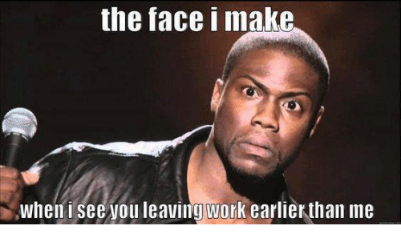
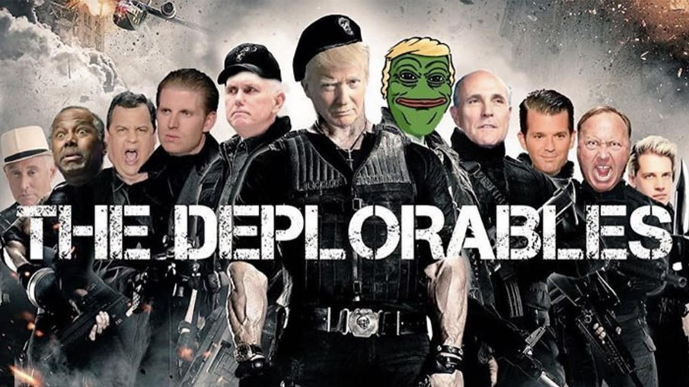
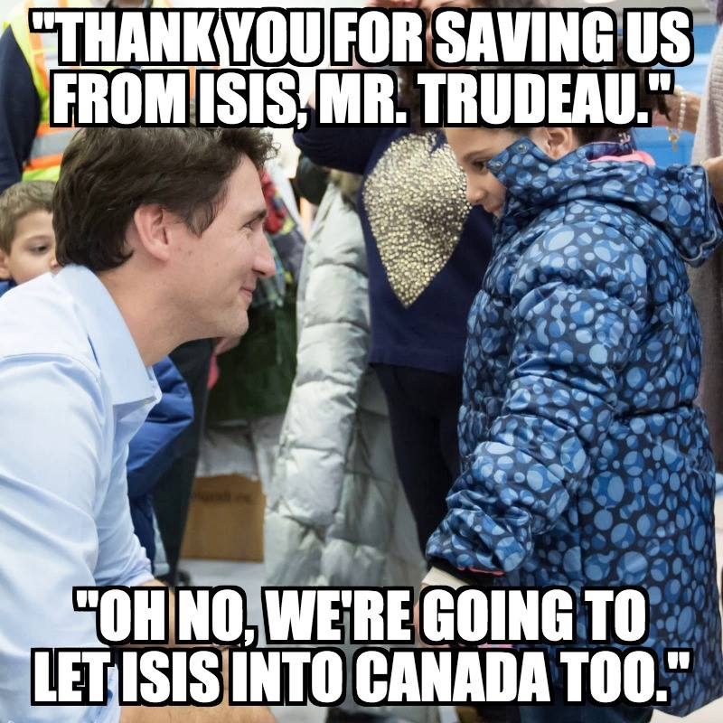
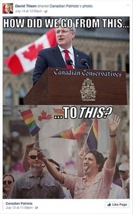
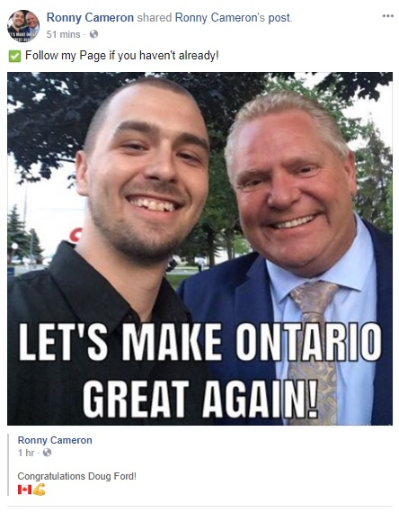

What is a Meme?
Contrary to popular belief, memes have been around for longer than just the past decade. In his 1976 book, The Selfish Gene, Richard Dawkins, an English zoologist, coined the term ‘meme’ in an attempt to explain the way cultural information spreads. Modernly, a meme is simply defined as semantic information that is copied and spread rapidly across the internet. This information is communicated through different mediums such as pictures, videos, gifs, text, and more. Memes coined the term ‘meme’ through the imageboard website, 4chan in the late 2000s. Today, they are common on virtually all social media platforms—especially Twitter, Facebook, Instagram, and Reddit.
 An example of a popular Internet meme: text superimposed upon funny photo of Comedian Kevin Hart
In recent years, virtual reality (VR) has made an extraordinary shift from a costly technology for video game enthusiasts to a valuable tool within the healthcare sector—more specifically, in the area of pain management. For individuals undergoing painful medical procedures and treatments, powerful painkillers may seem like the most obvious, if not the only option for patients and physicians alike. Unfortunately, this form of traditional pain management presents a multitude of risk factors, such as high rates of addiction, debilitating withdrawal symptoms, overdose, and even death.
Why Have Memes Become Relevant in Politics?
People are consuming more and more information online, particularly with respect to news. A recent report finds that 59% of Canadians get their news online through social media. News agencies are also recognizing this shift and are focusing their efforts to expanding their presence on social media platforms.
The increasingly popular trend of obtaining news online comes with the consequence of having to combat fake news (false and inaccurate news that has been intentionally fabricated). The 2016 US Presidential Election marked the first instance in which fake news spread rampantly online and had huge implications. Memes were heavily circulated online during the election; they propagated ideological viewpoints that targeted candidates, parties, or policies on numerous platforms. Their messages ultimately impacted how people perceived the big issues surrounding the election .
Dr. Bousfield argues that platforms matter with respect to the circulation of memes. He states that, “Memes on Facebook can get very toxic because of the private groups and specific, primarily white, audiences they are targeting.” Conversely, memes on platforms like Twitter, which do not have private or hidden groups, are “a lot more open and these memes are subject to greater backlash”. The privacy of hidden Facebook groups provides an opportunity for meme-creators to present radical ideologies exclusively to targeted, like-minded consumers who are most likely to accept them. On platforms that don’t allow users to form large private groups, every meme can be subjected to public scrutiny, and socially unacceptable content is more likely to face backlash that stops it from circulating. Facebook permits toxic political memes to circulate more widely and with less backlash. When political memes appear online, many interpret their meaning as humorous or random but in actuality, they are designed for a specific purpose.
Dog Whistling and the 2016 US Election
What is Dog Whistling? How are Memes a Form of Dog Whistling?
“Dog whistling” is a political strategy that aims to communicate a covert message to a specific group while being interpreted differently by the general audience. Perhaps the most prominent example of dog whistling is how Republicans wanted to subject gay civil rights to the discretion of state-level government, rather than passing legislation ensuring equal gay rights at the federal level.
Memes in the 2016 US Election
In February of 2016, the Washington Post labelled the presidential primaries as “the most memed election in US history”. This is the first instance in which memes became such an integral part of social media. The “meme-ing” of primary and presidential candidates became hugely popular as they engaged various groups of people who were not ordinarily involved in the political processes. Memes were used to illustrate highly-contested polarizing issues in simplistic and widely accessible ways.
Most importantly, memes became ways for radical groups to spread their messages and influence the masses through the strategy of dog whistling. The most notable example of this is the Pepe the Frog meme. Pepe the Frog started out as a good-humoured, widely popular internet meme that has transformed into a tool used to promote white supremacy.
The famous green frog rose to popularity with the “it feels good man” meme (below), which was later embedded into mainstream culture with the cartoon face being featured on clothes and fashion accessories. The meme became a cultural icon that was duplicated, remixed, and circulated widely. It was when Pepe’s circulation reached significant levels that there was suspicion of the character’s association with offensive ideas, cementing him as a problematic figure. A character who once was a good-natured meme was suddenly associated with propagating fascist and anti-Semitic ideologies.

The meme’s circulation reached significant heights when Donald Trump Jr. tweeted a rendition of the Pepe the Frog meme featuring President Trump’s electoral team in a parody of the poster of the movie, The Expendables. This meme, entitled “The Deplorables”, was made in reference to Hillary Clinton’s claim that Trump supporters were “the basket of deplorables”. This particular meme spread widely on different media platforms and was, for most people, their first exposure to the controversial cartoon frog.

Trump Jr.’s tweet of the meme prompted Hillary Clinton’s official campaign website to denounce the meme in an article that labelled it as a sinister white supremacist tool that propagated racist imagery and bigotry. The article implicitly drew a connection between Trump’s right-wing ideologies and the offensive tone of his campaign.
Pepe’s transformation from an innocent cartoon frog to a racist symbol was not a random act, but rather a carefully engineered plan by some Internet users to turn the character into a toxic figure that the general public would no longer be able to use freely. The meme was intentionally altered as a dog whistle strategy to support white supremacist ideals. Many saw the meme as something innocent, but it’d been manipulated to reveal a hidden support for racist and bigoted ideologies.
Canadian Focus
With the election of Prime Minister Justin Trudeau in 2015 and the Provincial Election in Ontario this past summer of 2018, political memes became prominent on Canadian social media. Although no particular meme like Pepe was used as a dog whistle tactic, many right-wing Facebook profiles began to circulate memes targeting Trudeau. Two of the most notable Facebook pages were Ontario Proud and Canadian Patriots, which have 410,000 and 98,000 likes respectively. They posted memes catering to the anti-Trudeau sentiments of their large audiences.
Example 1 (Ontario Proud). This picture (below) portrays Trudeau interacting with a young Syrian refugee upon her family’s entry to Canada. The text depicts the girl thanking Trudeau for saving her family from Isis, to which Trudeau replies saying that he is “going to let Isis into Canada too”. This is a ploy to target Trudeau’s open immigration policy through a racist meme that implicitly associates immigrants and refugees with terrorists.

Example 2 (Ontario Proud): This meme compares images depicting former Prime Minister Stephen Harper delivering a speech behind a podium, and current Prime Minister Justin Trudeau participating in festivities at the Toronto Pride Parade. “How did we go from [a poised and professional intellectual] to [some buoyant dude in a T-shirt who looks to be sticking his tongue out in a crowd]?” Here, the strategy of dog whistling is clearly employed. Superficially, it may seem as though the image aims to illustrate a dramatic contrast in professionalism between the two National leaders—Harper is shown in a formal setting and Trudeau is shown at a parade—but there’s a greater meaning hidden within this meme. The text is not asking how we went from a presumably more professional leader to a presumably less professional one, but rather, how did we go from a conservative leader with a strong stance against the LGBTQ+ community to a leader who embraces it? Trudeau is shown holding a pride flag to support the LGBTQ+ community; this meme displays bigotry against the LGBTQ+ community.

Example 3: This meme was created by a known white nationalist, Ronny Cameron, who posed with Ontario Premier Doug Ford for a photo at a barbeque in May 2018. To congratulate Ford on being elected Premier, Cameron posted the photo to his Facebook page, adding the text, “Let’s make Ontario great again!” There are several things to unpack about this particular meme and how it’s used as a dog whistle to promote white nationalism. First, Cameron publicly admitted that Ford was directly communicating with white nationalists using a “dog whistle” by taking this photo. Months later, in September of 2018, Ford posed with another white nationalist, Faith Gold, and refused to denounce her as such. Second, Cameron modifies Trump’s 2016 campaign slogan, “Make America Great Again” to “Make Ontario Great Again”. Trump is another politician who has publicly refused to denounce white nationalists in the past, which was especially evident after the events in Charlottesville, Virginia. The fact that Ford is posing with known white nationalists and refusing to denounce them acts as the dog whistle; he is implicitly supporting them through posing in a photo and later affirming his stance by not denouncing them or the photo he took.

Future Considerations
Will These Types of Political Memes Continue to be Relevant?
It has become evident that toxic political memes like portrayals of Pepe are strategically used as dog whistle tactics by radical groups in both Canada and the US. External actors involved in the foreign meddling of elections have also employed memes as a strategy to influence the public online. For example, it is known that Russia’s meddling in the 2016 US election lead to the spread of fake news, but also the spread of these intentionally designed memes as well.
The threat that foreign countries pose to the election process, political parties/politicians, and social media has also raised concern in both the United States and in Canada. In fact, the Communication Securities Establishment of Canada (CSEC) has actually recognized online memes on social media platforms as cyber-threats to Canada’s democracy.
The potential threat posed by memes forces us to consider whether they will continue to be as impactful in the future. Dr. Bousfield believes that, following government intervention (i.e., the CSEC), the threat posed by memes is on the decline. He suggests that, “Trump was the tipping point and there has been so much push back now that you’ll see the influence of memes decline.”
Moving Forward
Everything online is trying to monetize your attention, whether it be explicit or not. Whether you are purchasing a subscription for an online newspaper, scrolling through the ads on your Facebook feed, or simply watching a YouTube video, the way you engage with content leads to financial gain for an individual or an entity. There is always a goal for content creators to capture your attention so that you continue to return to or participate in whatever it may be. It is extremely important to be conscious about the content you consume and to be cognizant of the intentions of content creators. With respect to Internet memes, many are comedic in nature, but there are nevertheless toxic memes in circulation with malicious intent.
When asked what he would say to Western students who inevitably encounter memes on a daily basis, Dr. Bousfield used UWO Confessions, an Instagram account that posts anonymous confessions and stories on a wide variety of topics, as an analogy: “The account is posting such extreme and fabricated stories just to continue to be popular… This is the same principle with memes. They will continue to get more extreme to push the envelope and continue to attract people’s attention. It’s always a fight for attention and they will continue to do more and more ridiculous things to entice you.”
The next time you pass by a political meme, a news story, an article, or advertisement online, ask yourself the following questions: Is there a source? Is this misleading? What could someone gain from creating this? These simple questions can help filter through the constant flood of information we absorb on a daily basis.